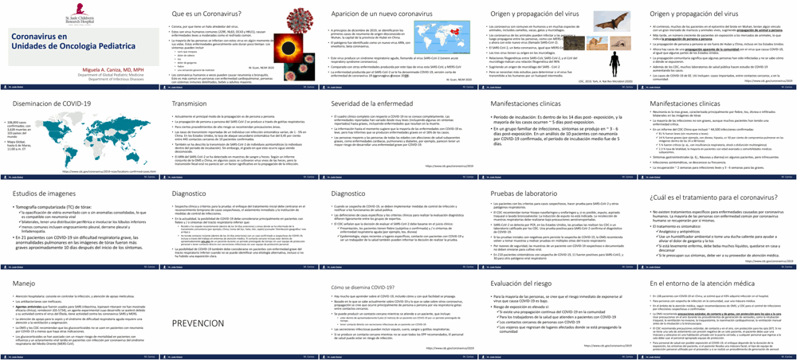
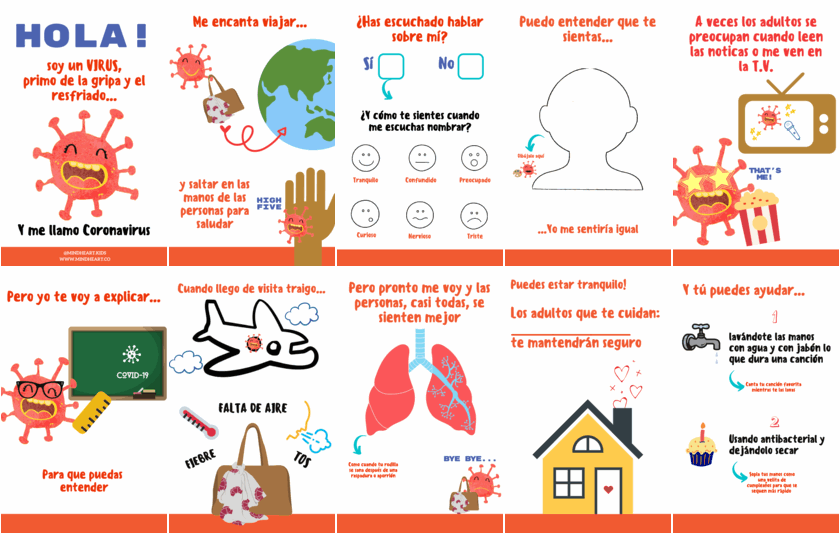
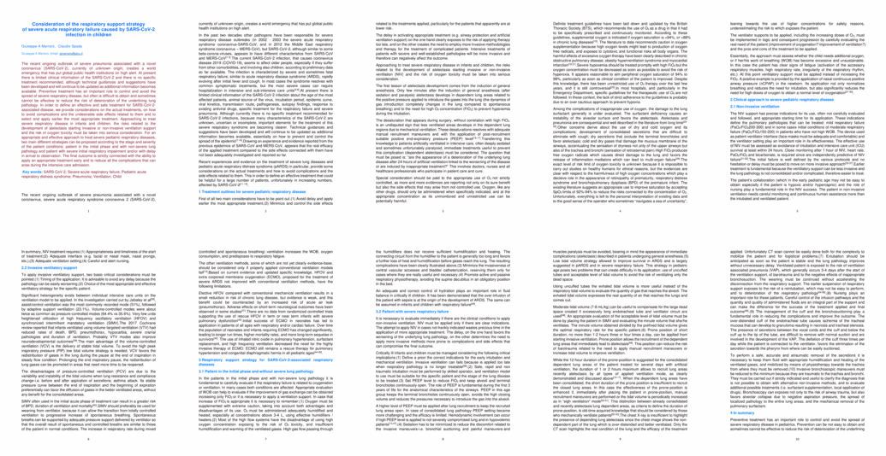
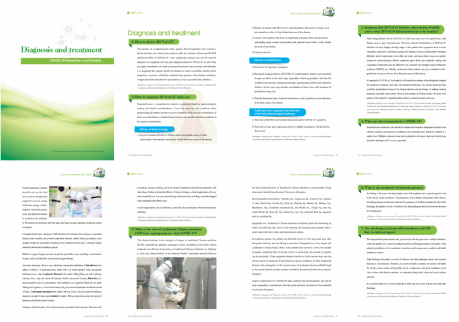
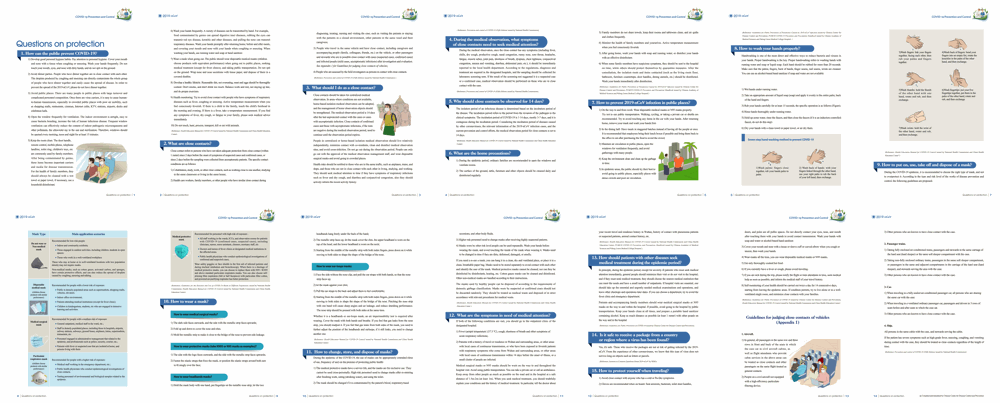
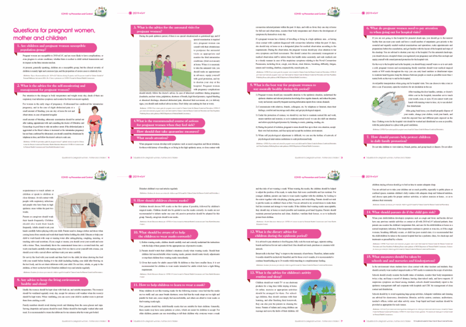
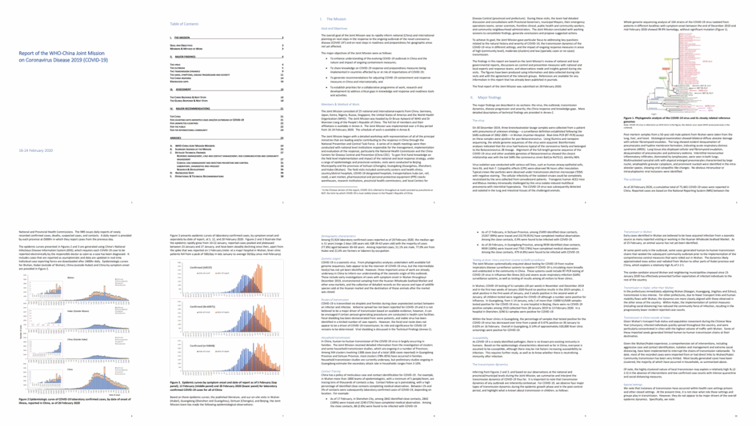
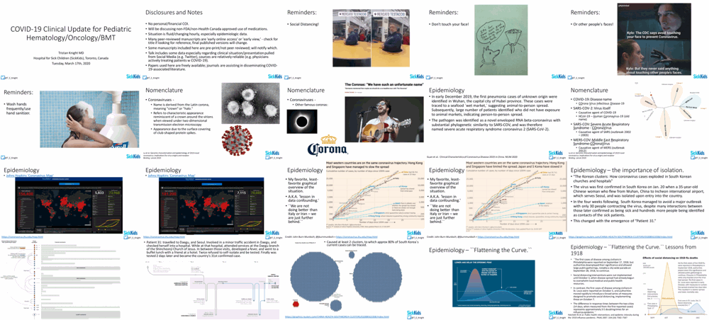
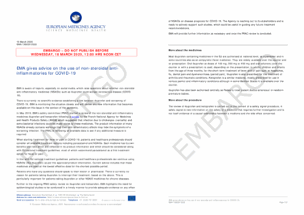

Esperando estén todos bien, ante la situación actual del COVID-19 compartiremos la información que tengamos al alcance y que consideramos les sea de utilidad para ustedes y sus colaboradores.
We hope everyone is doing well. Given the current situation of COVID-19, we will share the information that we have at our disposition and that could be useful to you and your colleagues.